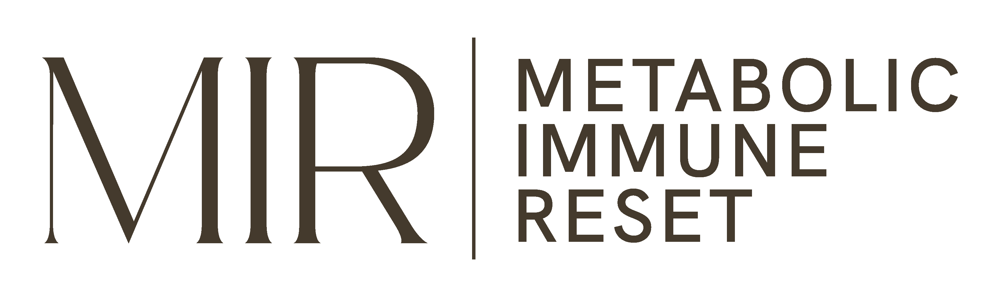
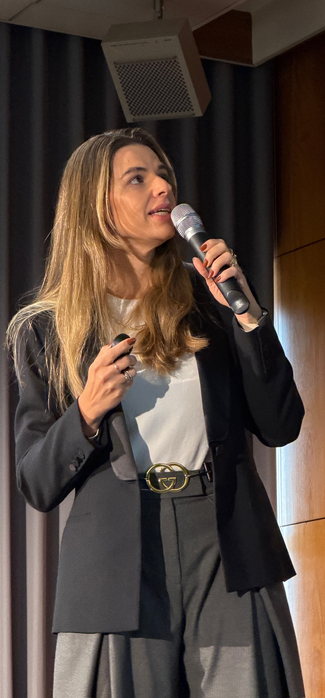
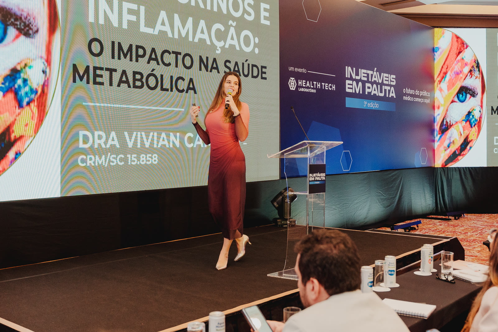
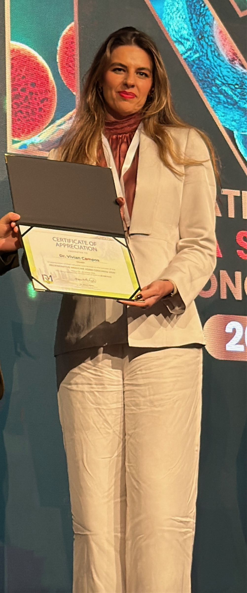

— Mentoria para Médicos

— Programa
Dominar raciocínio clínico integrado e aplicado a doenças imunometabólicas (SOGIAH). Saber conduzir casos complexos.
Montar protocolos individualizados baseados em dados reais.
Estruturar programas de acompanhamento de 6 a 12 meses, com uma base de pacientes fiéis (e que te indicam).
Fazer parte de ecossistema de médicos que pensam igual e compartilham estratégias.
— Perfil
Você já fez cursos de medicina integrativa, nutrologia, medicina funcional. Acumulou certificados. Tem conhecimento teórico sólido. Mas quando senta na cadeira para atender, ainda se sente inseguro.
Não sabe por onde começar a investigação. Pede exames demais (ou de menos). Monta protocolo genérico porque não sabe como individualizar. Paciente não melhora como esperado.
Resultado após a MIR:
Você transforma conhecimento teórico em conduta clínica estruturada. Sabe exatamente qual eixo investigar primeiro, quais exames pedir e como montar protocolo individualizado.
Seu consultório tem um bom fluxo, seus pacientes melhoram, mas somem no 3º mês. Isso porque não sabe estruturar um programa de acompanhamento que fideliza o paciente e que progressivamente melhora o bem-estar dele.
Resultado após a MIR:
Você monta programas de 6 a 12 meses, pensando de forma INTEGRAL. Pacientes OBTÊM RESULTADOS, ficam, se fidelizam e você vê seu consultório crescer.
— Sistema
O mapa imunometabólico que organiza sua conduta do primeiro minuto da consulta até o protocolo final.
— Formato
— Comunidade
Troca de casos. Discussões clínicas. Parcerias. Indicações mútuas.
Suporte diário no WhatsApp. Não apenas durante as aulas.
Médicos selecionados podem atender pacientes dentro do meu ecossistema. Minha estrutura traz o paciente qualificado, você atende e recebe.



— Quem vai te mentorar
Dra. Vivian Azevedo Marques de Campos · CRM-SC 15858 · CRM-SP 128588
Médica com 18 anos de experiência clínica, focada em Medicina Integrativa e Saúde Metabólica e Imunologia Funcional, visando a saúde integral.
Possui pós-graduações em Nutrologia, Gastroenterologia Funcional, Medicina Estética, Biologia Molecular e Alergia e Imunologia.
Investiu mais de R$ 1 milhão em sua formação em cursos e congressos nacionais e internacionais.
Em 2025, obteve o prestigiado título de IFM Certified Practitioner (IFMCP) pelo Institute for Functional Medicine (IFM-USA), uma certificação de elite no Brasil.
Em 2026, foi convidada a integrar o corpo docente da American Board of Regenerative Medicine, participando também de sua atuação internacional em Dubai.
Clinicamente, atende e reverte casos complexos de autoimunidade, resistência insulínica, disfunção mitocondrial e disbiose que outros médicos encaminharam ou desistiram de tratar.
Os temas abordados incluem inflamação crônica, metais tóxicos, autoimunidade, obesidade e longevidade. Dentre seus congressos de destaque estão o European Congress of Integrative Medicine e o Middle East Regenerative Medicine Congress em Dubai. Ela também é professora em pós-graduações renomadas no país.
— Processo seletivo
Você preenche formulário de aplicação (leva 3 minutos)
Nossa equipe avalia se seu perfil está alinhado
Se aprovado, você agenda call de apresentação com a equipe (15–20min)
Se fizer sentido para ambos os lados, você formaliza inscrição
Recebe acesso à plataforma + entra no grupo + cronograma completo
— Por que processo seletivo?
Porque queremos médicos comprometidos. Que vão aplicar, levam a sério esse compromisso e querem evoluir para oferecer o que os pacientes mais precisam. Turma pequena (20 médicos) exige alinhamento.
— Vagas
Este é um daqueles raros investimentos que se pagam sozinhos.